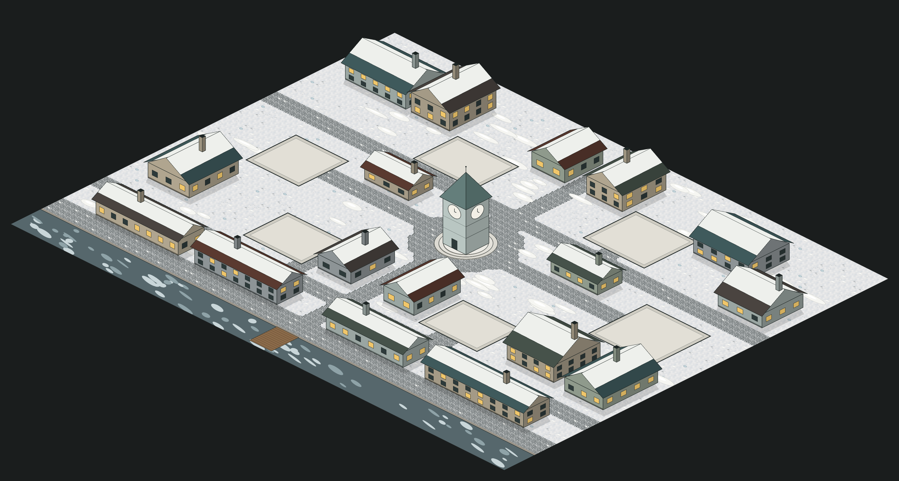

南边：森林边缘的黑湖（开始结冰）· 小木栈桥
湖对岸：黑松林 + 岩缝里的狼眼
北边远处：山丘、修道院的轮廓、被夕阳吞没的天际线
1黯月旅店原 酒馆 · 门口停着篷车和马
2山丘修道院礼拜堂原 教堂 · 暗红彩窗、枯藤
3修补匠的钟表工坊原 铁匠铺 · 屋顶冒出齿轮
4茶馆原 面包房 · 布篷和两张小桌
5教授的书房兼解剖室原 图书馆 · 屋顶小天文台
6乌鸦墓园原 墓园 · 新翻的坟土、落满乌鸦的枯枫
★被枯藤缠住的旧钟楼广场中央（障碍物不变）
枫树：橙红叶 + 黑色斑点
屋脊上的乌鸦
落叶 + 初雪混在石板路上
挂在木杆上的暖色油灯
地图边缘：森林剪影渐隐成黑